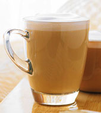

拿铁Caffè Latte

这是一种传统的经典饮料——浓缩咖啡调入热牛奶，其上覆盖一层轻盈的奶沫。
品尝此款咖啡时，您可以选择特别加入某种口味（如香草，焦糖或杏仁口味）的糖浆。
卡布奇诺Cappuccino

这款咖啡沿袭传统技法，由我们技艺娴熟的咖啡吧员将手工制作的热奶与细腻奶泡轻柔地浇在浓缩咖啡之上制作而成。
摩卡Caffè Mocha

这款咖啡由醇香的摩卡酱，浓缩咖啡和蒸奶相融相合，上面覆以搅打奶油。
寒冷的日子里，忧伤的时光中,任何人都无法抵抗她的诱惑。
浓缩咖啡Espresso

这是咖啡的精粹，以最浓缩的方式显现。浓缩咖啡带点焦糖味道，浓厚馥郁。